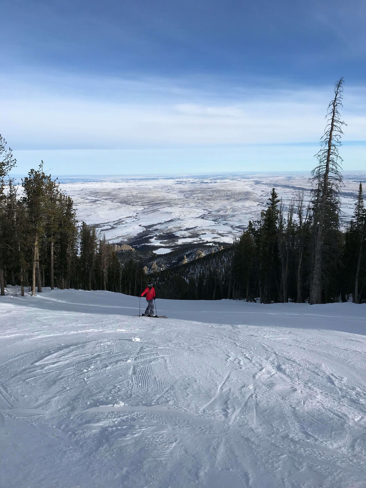

Winter in Montana
People from all over the country come to Montana to enjoy what it has to offer during the winter. Winter in Montana brings lots of snow and multiple days below zero. If you can prepare for that, then winter might just be one of your favorite seasons in Montana. Some popular activities include:
- Skiing/snowboarding
- Ice skating
- Sledding
- Snowmobiling
- Ice fishing
- Bird hunting
- Snowshoeing
Make sure you dress appropriately for any outdoor activity during the winter. The combination of multiple feet of snow and below freezing wind chill can make for a miserable day outside if you're not dressed appropriately.